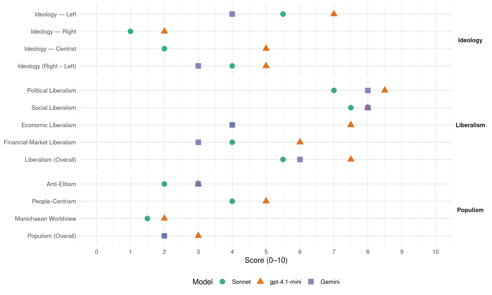

Labour (New Zealand, 1969)
manifesto_id 64320_196911
Get full text: This site shows derived annotations and short verbatim quotes only. The full manifesto text is © Manifesto Project / WZB — obtain it via manifesto-project.wzb.eu using the manifesto_id above.
Headline scores
| Dimension | Sonnet | gpt-4.1-mini | Gemini |
|---|---|---|---|
| Populism (Overall) | 2.0 | 3.0 | 2.0 |
| Anti-Elitism | 2.0 | 3.0 | 3.0 |
| People-Centrism | 4.0 | 5.0 | – |
| Manichaean Worldview | 1.5 | 2.0 | – |
| Ideology (Right − Left) | 4.0 | 5.0 | 3.0 |
| Liberalism (Overall) | 5.5 | 7.5 | 6.0 |
| Political Liberalism | 7.0 | 8.5 | 8.0 |
| Social Liberalism | 7.5 | 8.0 | 8.0 |
| Economic Liberalism | 4.0 | 7.5 | 4.0 |
| Financial-Market Liberalism | 4.0 | 6.0 | 3.0 |
Evidence per dimension
Economic Liberalism
Gemini · score 4.0 · verified · chunk 1
“use price control, though there are practical”
Labour will not hesitate to use price control, though there are practical limitations as to the extent
Gemini · score 4.0 · mixed · chunk 2
“undertake more construction work in competition with private enterprise”
adequately equipped to undertake more construction work in competition with private enterprise. Roading. Labour will continue
gpt-4.1-mini · score 7.0 · verified · chunk 1
“The Development Finance Corporation will be reorganised, its capital structure greatly expanded, its lending ability broadened”
The steel, aluminium and oil industries, initiated by the second LABOUR Government, herald the beginning of an era of unprecedented industrial opportunity for New Zealand. The maximum development of local industries, especially those utilising indigenous raw materials and minerals, will be encouraged, with the maximum participation of local capital as the means of broadening, strengthening and advancing the New Zealand economy, living standards and security of employment. Industrial development in some centres has already reached the stage where it will continue to generate further expansion. In other localities, however, population has outstripped employment and industrial capacity. For social as well as economic reasons, industry must be expanded in such districts to provide employment for more young People within the local community and to increase local prosperity. 1. The Development Finance Corporation will be reorganised, its capital structure greatly expanded, its lending ability broadened, and it will be directed to play a more positive role -in the development and expansion of New Zealand industry by New Zealanders.
gpt-4.1-mini · score 8.0 · verified · chunk 2
“Labour will extend the present Acts which allow Local Authorities to buy and develop land for industrial purposes for the erection of industrial buildings.”
6. Labour will extend the present Acts which allow Local Authorities to buy and develop land for industrial purposes for the erection of industrial buildings. This will enable Local Authorities to associate with Central Government in furthering the decentralisation of industry.
Sonnet · score 4.0 · verified · chunk 1
“price control, though there are practical limitations”
Labour will not hesitate to use price control, though there are practical limitations as to the extent to which price control can be employed
Sonnet · score 4.0 · verified · chunk 2
“competition it offers will be hard, keen and efficient”
where it must compete the competition it offers will be hard, keen and efficient.
Financial-Market Liberalism
Gemini · score 3.0 · verified · chunk 1
“institutions and individuals that deal in credit”
authority over actions of institutions and individuals that deal in credit or accept deposits from the public
Gemini · score 3.0 · verified · chunk 2
“work to reduce interest rates”
assist ratepayers and local Government Labour will work to reduce interest rates. 5. Labour will extend
gpt-4.1-mini · score 6.0 · verified · chunk 1
“The Reserve Bank must have this role. It will act as adviser to and agent for the Government”
The private institutions do more than decide between the competing claims for credit. They influence its price and also the amount created or made available. For efficiency and competition, it is not a bad thing that there is such variety in the conduct of day-to-day business, but for the central decisions on credit policy it is essential that there should be one authority, with full information on world trends and a wide view of the New Zealand situation. The Reserve Bank must have this role. It will act as adviser to and agent for the Government, who will also have advice from Treasury and the National Development Council. All the other financial institutions will maintain their roles in the normal banking and exchange business except where this now involves alterations in the level and cost of credit. They will be legally obliged to follow the general policies of the Reserve Bank in this area of activity.
Sonnet · score 4.0 · verified · chunk 1
“Reserve Bank must have this role”
The Reserve Bank must have this role. It will act as adviser to and agent for the Government
Sonnet · score 4.0 · verified · chunk 2
“reduce interest rates”
To assist ratepayers and local Government Labour will work to reduce interest rates.
Political Liberalism
Gemini · score 8.0 · verified · chunk 1
“respect and uphold personal rights and liberties”
It is our policy to respect and uphold personal rights and liberties; to extend democratic principles
Gemini · score 8.0 · verified · chunk 2
“freedom of the press, the right to publish”
GENERAL POLICY. 1. The freedom of the press, the right to publish the truth, the right to free expression
gpt-4.1-mini · score 8.0 · verified · chunk 1
“Open more of Parliament’s Select Committee meetings to the public and the news media.”
3. Undertake much needed reforms to make Parliament more effective and efficient. Parliament will meet earlier each year. The election of a Labour Government means that in 1970 Parliament would be called together on 28th January. Each Session will be divided into two main parts. The first and longest recess would be utilised for a period of intensive Select Committee work. Further working recesses in the second part of the Session will be arranged as necessary. Such a spread of work should do much to eliminate the pressures that build up towards the end of Sessions and also enable more careful consideration of legislation. 4. Open more of Parliament’s Select Committee meetings to the public and the news media. 5. Review and revise further Parliament’s Standing Orders to secure more efficiency in the conduct of the business of Parliament. Among the proposals to be considered would be the introduction of time-limited debates. Under this procedure a maximum period of time would be set for certain classes of debate. This will enable unnecessarily extensive and repetitive debates to be avoided, while at the same time permitting a fair and reasonable time for discussion. If extended hours are necessary, Parliament Standing Orders should provide for Parliament to meet earlier in the day rather than sit beyond midnight.
gpt-4.1-mini · score 9.0 · verified · chunk 2
“The freedom of the press, the right to publish the truth, the right to free expression and discussion are strongly upheld.”
News media. GENERAL POLICY. 1. The freedom of the press, the right to publish the truth, the right to free expression and discussion are strongly upheld. 2. We believe that a healthy and lively democracy is a well-informed democracy that has available to all its people freely and fully the widest possible range of viewpoints, opinions and news.
Sonnet · score 7.0 · verified · chunk 1
“extend democratic principles”
to ensure a socially just and economically secure basis of family life; to extend democratic principles; to modernise Government
Sonnet · score 7.0 · verified · chunk 2
“freedom of the press, the right to publish”
1. The freedom of the press, the right to publish the truth, the right to free expression and discussion are strongly upheld.
Liberalism (Overall)
Gemini · score 6.0 · verified · chunk 1
“respect and uphold personal rights and liberties”
It is our policy to respect and uphold personal rights and liberties; to extend democratic principles
Gemini · score 6.0 · verified · chunk 2
“freedom of the press, the right to publish”
GENERAL POLICY. 1. The freedom of the press, the right to publish the truth, the right to free expression
gpt-4.1-mini · score 7.0 · verified · chunk 1
“The Reserve Bank must have this role. It will act as adviser to and agent for the Government”
The private institutions do more than decide between the competing claims for credit. They influence its price and also the amount created or made available. For efficiency and competition, it is not a bad thing that there is such variety in the conduct of day-to-day business, but for the central decisions on credit policy it is essential that there should be one authority, with full information on world trends and a wide view of the New Zealand situation. The Reserve Bank must have this role. It will act as adviser to and agent for the Government, who will also have advice from Treasury and the National Development Council. All the other financial institutions will maintain their roles in the normal banking and exchange business except where this now involves alterations in the level and cost of credit. They will be legally obliged to follow the general policies of the Reserve Bank in this area of activity.
gpt-4.1-mini · score 8.0 · verified · chunk 2
“The freedom of the press, the right to publish the truth, the right to free expression and discussion are strongly upheld.”
News media. GENERAL POLICY. 1. The freedom of the press, the right to publish the truth, the right to free expression and discussion are strongly upheld. 2. We believe that a healthy and lively democracy is a well-informed democracy that has available to all its people freely and fully the widest possible range of viewpoints, opinions and news.
Sonnet · score 5.0 · verified · chunk 1
“extend democratic principles”
to ensure a socially just and economically secure basis of family life; to extend democratic principles; to modernise Government
Sonnet · score 6.0 · verified · chunk 2
“freedom of the press, the right to publish”
1. The freedom of the press, the right to publish the truth, the right to free expression and discussion are strongly upheld.
Anti-Elitism
Gemini · score 3.0 · verified · chunk 2
“interests of overseas shipping combines”
interests of the nation as a whole, not primarily the interests of overseas shipping combines. Its policy will be designed to
gpt-4.1-mini · score 3.0 · verified · chunk 1
“Labour will introduce legislation requiring importers, distributors and manufacturers to notify the Commission”
…will be introduced making it an offence to prepack any commodity in a non-transparent container unless the guaranteed minimum weight, number or measure of the contents is clearly indicated upon the container. Labour will introduce legislation requiring importers, distributors and manufacturers to notify the Commission not less than six weeks prior to increasing the price for any consumer commodity, supplying to the Commission provable justification for the proposed increase. Failure to notify increases, to be the subject of prosecution. 5. The prices of a basic list of goods vitally influencing the cost of living will be fairly and firmly controlled by the Commission. Wage and salary awards and agreements will be automatically adjusted at regular, intervals to compensate for increases in the cost of goods and services on this basic list. Social Security benefits will be subject to similar adjustments. 6. A Labour Government would instruct the Trades Practices Commission to conduct an early enquiry into servicing charges such home appliance repairs, motor vehicle repairs and home maintenance, with a view to establishing with the trades concerned a fair basis for accepted service charges. 7. The Trade Practices Commission will be empowered to order the dismantling of monopolies operating against the public interest, and to prohibit mergers and take-overs found by it to be contrary to the public interest. 8. Where, due to the absence of effective competition or for other reasons, prices of selected goods or services become unreasonably high, Labour will not hesitate to use price control, though there are practical limitations as to the extent to which price control can be employed.
Sonnet · score 2.0 · verified · chunk 1
“erode the family’s income”
protected against unreasonable price increases and other unfair practices which force up living costs and erode the family’s income
Sonnet · score 2.0 · verified · chunk 2
“pursuit of normal commercial procedures eliminates rival newspapers”
A free and balanced press is not something the people get automatically. It is something the people could lose automatically as pursuit of normal commercial procedures eliminates rival newspapers and establishes a monopoly
Ideology — Centrist
gpt-4.1-mini · score 5.0 · verified · chunk 1
“This Manifesto represents the most comprehensive, consistent and constructive programme ever presented to the people of this country.”
Labour election policy 1969. Towards nationhood with labour the New Zealand Party. Foreword The policy planks set out in this Manifesto comprise the platform of a united and determined Labour Party. This Manifesto represents the most comprehensive, consistent and constructive programme ever presented to the people of this country. There are no last minute additions. The entire Manifesto is the result of the widest possible consultation, investigation and intensive study. Because the Manifesto is comprehensive, we ask that our policies be judged as a whole, which will be implemented step by step over the next three years. Now, is the time for change. Change that will widen and improve the range of opportunities open to New Zealanders and so stimulate a bold new thrust into the future.
Sonnet · score 2.0 · verified · chunk 1
“most comprehensive, consistent and constructive programme”
This Manifesto represents the most comprehensive, consistent and constructive programme ever presented to the people
Sonnet · score 2.0 · verified · chunk 2
“full and equal participation, opportunities, obligations”
Labour recognises that full and equal participation, opportunities, obligations and responsibilities are fundamental to New Zealand citizenship
Ideology — Left
Gemini · score 4.0 · verified · chunk 2
“interests of overseas shipping combines”
interests of the nation as a whole, not primarily the interests of overseas shipping combines. Its policy will be designed to
gpt-4.1-mini · score 7.0 · verified · chunk 1
“Labour will introduce legislation requiring importers, distributors and manufacturers to notify the Commission”
…will be introduced making it an offence to prepack any commodity in a non-transparent container unless the guaranteed minimum weight, number or measure of the contents is clearly indicated upon the container. Labour will introduce legislation requiring importers, distributors and manufacturers to notify the Commission not less than six weeks prior to increasing the price for any consumer commodity, supplying to the Commission provable justification for the proposed increase. Failure to notify increases, to be the subject of prosecution. 5. The prices of a basic list of goods vitally influencing the cost of living will be fairly and firmly controlled by the Commission. Wage and salary awards and agreements will be automatically adjusted at regular, intervals to compensate for increases in the cost of goods and services on this basic list. Social Security benefits will be subject to similar adjustments. 6. A Labour Government would instruct the Trades Practices Commission to conduct an early enquiry into servicing charges such home appliance repairs, motor vehicle repairs and home maintenance, with a view to establishing with the trades concerned a fair basis for accepted service charges. 7. The Trade Practices Commission will be empowered to order the dismantling of monopolies operating against the public interest, and to prohibit mergers and take-overs found by it to be contrary to the public interest. 8. Where, due to the absence of effective competition or for other reasons, prices of selected goods or services become unreasonably high, Labour will not hesitate to use price control, though there are practical limitations as to the extent to which price control can be employed.
Sonnet · score 6.0 · verified · chunk 1
“redistribution of goods and services”
The aim must be the expansion of production and the fairer distribution of goods and services
Sonnet · score 5.0 · verified · chunk 2
“Labour will reduce interest rates”
To assist ratepayers and local Government Labour will work to reduce interest rates.
Ideology (Right − Left)
Gemini · score 3.0 · verified · chunk 2
“interests of overseas shipping combines”
interests of the nation as a whole, not primarily the interests of overseas shipping combines. Its policy will be designed to
gpt-4.1-mini · score 5.0 · verified · chunk 1
“Labour will introduce legislation requiring importers, distributors and manufacturers to notify the Commission”
…will be introduced making it an offence to prepack any commodity in a non-transparent container unless the guaranteed minimum weight, number or measure of the contents is clearly indicated upon the container. Labour will introduce legislation requiring importers, distributors and manufacturers to notify the Commission not less than six weeks prior to increasing the price for any consumer commodity, supplying to the Commission provable justification for the proposed increase. Failure to notify increases, to be the subject of prosecution. 5. The prices of a basic list of goods vitally influencing the cost of living will be fairly and firmly controlled by the Commission. Wage and salary awards and agreements will be automatically adjusted at regular, intervals to compensate for increases in the cost of goods and services on this basic list. Social Security benefits will be subject to similar adjustments. 6. A Labour Government would instruct the Trades Practices Commission to conduct an early enquiry into servicing charges such home appliance repairs, motor vehicle repairs and home maintenance, with a view to establishing with the trades concerned a fair basis for accepted service charges. 7. The Trade Practices Commission will be empowered to order the dismantling of monopolies operating against the public interest, and to prohibit mergers and take-overs found by it to be contrary to the public interest. 8. Where, due to the absence of effective competition or for other reasons, prices of selected goods or services become unreasonably high, Labour will not hesitate to use price control, though there are practical limitations as to the extent to which price control can be employed.
Sonnet · score 4.0 · verified · chunk 1
“fairer distribution of goods and services”
The aim must be the expansion of production and the fairer distribution of goods and services
Sonnet · score 4.0 · verified · chunk 2
“Labour will reduce interest rates”
To assist ratepayers and local Government Labour will work to reduce interest rates.
Ideology — Right
gpt-4.1-mini · score 2.0 · verified · chunk 1
“New Zealand’s agricultural, factory, and servicing industries have the right to protection from foreign investment which could prejudice their existence, independence or economic viability.”
New Zealand’s agricultural, factory, and servicing industries have the right to protection from foreign investment which could prejudice their existence, independence or economic viability. POLICY DETAILS: 1. Under a Labour Government foreign investment in New Zealand will be strictly supervised. 2. The value of proposed foreign investment will be measured in terms of its contribution to the type and quality of economic growth it implies. 3. Subsidiaries of overseas companies will continue to be required to issue full financial reports. 4. For selected industrial development, overseas capital will be sought, preferably in the form of debentures; capital will be channelled to projects through an expanded Industrial Development Finance Corporation, to ensure the highest possible level of New Zealand participation in ownership in New Zealand industry. 5. Because the aim is to retain New Zealand control over development, all proposals which involve the investment of capital controlled by non-residents whether in new enterprises or land or for the purchase of existing concerns, will be scrutinised by a special new Authority. This Authority will consist of five members appointed by the governor-general. There will be a right of appeal to the administrative decision of the Supreme Court against its decisions. It will be required to base its decisions on the broad principles of the national interest to oppose monopolies unless they are clearly shown to be in the public interest and to prevent any investment that has at its main on substantial result, the transfer of profits payable within New Zealand to overseas investors. 6. All takeover proposals, whether by New Zealand or overseas interests, will be subject to examination by this Authority.
Sonnet · score 1.0 · verified · chunk 1
“non-European immigration policy must be kept”
New Zealand’s non-European immigration policy must be kept under constant and careful scrutiny
Sonnet · score 1.0 · verified · chunk 2
“overseas interests did not obtain greater advantages”
would also ensure that overseas interests did not obtain greater advantages in exploiting our mineral resources than would accrue to New Zealand
Manichaean Worldview
gpt-4.1-mini · score 2.0 · verified · chunk 1
“The first duty of a Government is to ensure the safety and protection of the community.”
In LABOUR’S administration, the mounting toll of personal injury and property damage caused by vandals, hooligans and stand-over bullies will be met by positive action. The first duty of a Government is to ensure the safety and protection of the community. LABOUR accepts that responsibility. Effective steps will be taken aimed at stamping out lawlessness.
Sonnet · score 2.0 · verified · chunk 1
“National Party’s policy which has held”
Labour will reverse the National Party’s policy which has held the level of personal exemption from 1960 to 1969
Sonnet · score 1.0 · verified · chunk 2
“obnoxious provisions to enter and inspect”
amended to remove: (a) The obnoxious provisions to enter and inspect ratepayers’ homes; and (a) Financial injustices and anomalies
People-Centrism
gpt-4.1-mini · score 5.0 · verified · chunk 1
“This Manifesto represents the most comprehensive, consistent and constructive programme ever presented to the people of this country.”
Labour election policy 1969. Towards nationhood with labour the New Zealand Party. Foreword The policy planks set out in this Manifesto comprise the platform of a united and determined Labour Party. This Manifesto represents the most comprehensive, consistent and constructive programme ever presented to the people of this country. There are no last minute additions. The entire Manifesto is the result of the widest possible consultation, investigation and intensive study. Because the Manifesto is comprehensive, we ask that our policies be judged as a whole, which will be implemented step by step over the next three years. Now, is the time for change. Change that will widen and improve the range of opportunities open to New Zealanders and so stimulate a bold new thrust into the future.
Sonnet · score 5.0 · verified · chunk 1
“every New Zealander has the right”
The LABOUR PARTY has always affirmed that every New Zealander has the right to adequate housing
Sonnet · score 3.0 · verified · chunk 2
“greatest benefit will accrue to the country as a whole”
To preserve and retain, where beneficial and necessary, our natural resources so that the greatest benefit will accrue to the country as a whole.
Populism (Overall)
Gemini · score 2.0 · verified · chunk 2
“interests of overseas shipping combines”
interests of the nation as a whole, not primarily the interests of overseas shipping combines. Its policy will be designed to
gpt-4.1-mini · score 3.0 · verified · chunk 1
“Labour will introduce legislation requiring importers, distributors and manufacturers to notify the Commission”
…will be introduced making it an offence to prepack any commodity in a non-transparent container unless the guaranteed minimum weight, number or measure of the contents is clearly indicated upon the container. Labour will introduce legislation requiring importers, distributors and manufacturers to notify the Commission not less than six weeks prior to increasing the price for any consumer commodity, supplying to the Commission provable justification for the proposed increase. Failure to notify increases, to be the subject of prosecution. 5. The prices of a basic list of goods vitally influencing the cost of living will be fairly and firmly controlled by the Commission. Wage and salary awards and agreements will be automatically adjusted at regular, intervals to compensate for increases in the cost of goods and services on this basic list. Social Security benefits will be subject to similar adjustments. 6. A Labour Government would instruct the Trades Practices Commission to conduct an early enquiry into servicing charges such home appliance repairs, motor vehicle repairs and home maintenance, with a view to establishing with the trades concerned a fair basis for accepted service charges. 7. The Trade Practices Commission will be empowered to order the dismantling of monopolies operating against the public interest, and to prohibit mergers and take-overs found by it to be contrary to the public interest. 8. Where, due to the absence of effective competition or for other reasons, prices of selected goods or services become unreasonably high, Labour will not hesitate to use price control, though there are practical limitations as to the extent to which price control can be employed.
Sonnet · score 2.0 · verified · chunk 1
“people of New Zealand are entitled”
LABOUR believes the people of New Zealand are entitled to be protected against unreasonable price increases
Sonnet · score 2.0 · verified · chunk 2
“pursuit of normal commercial procedures eliminates rival newspapers”
A free and balanced press is not something the people get automatically. It is something the people could lose automatically as pursuit of normal commercial procedures eliminates rival newspapers and establishes a monopoly
Social Liberalism